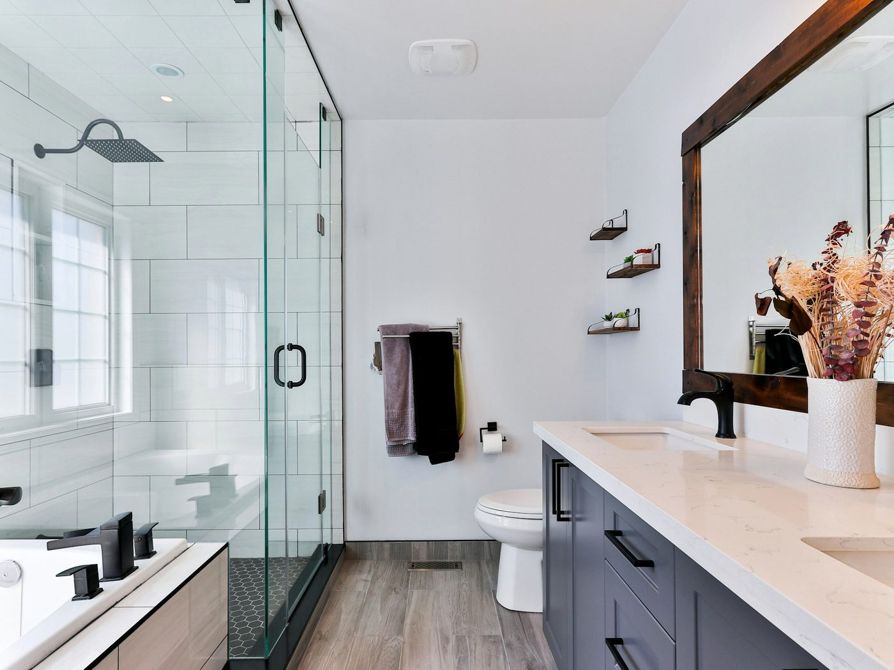
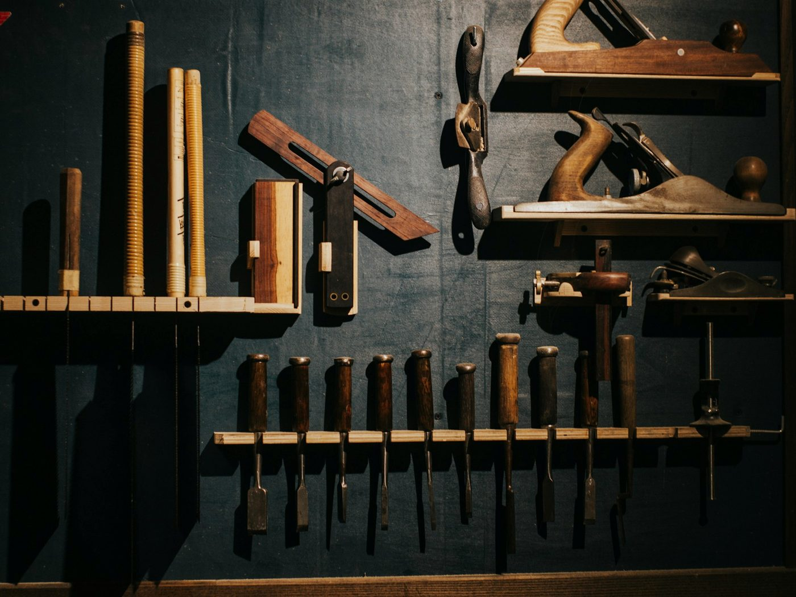
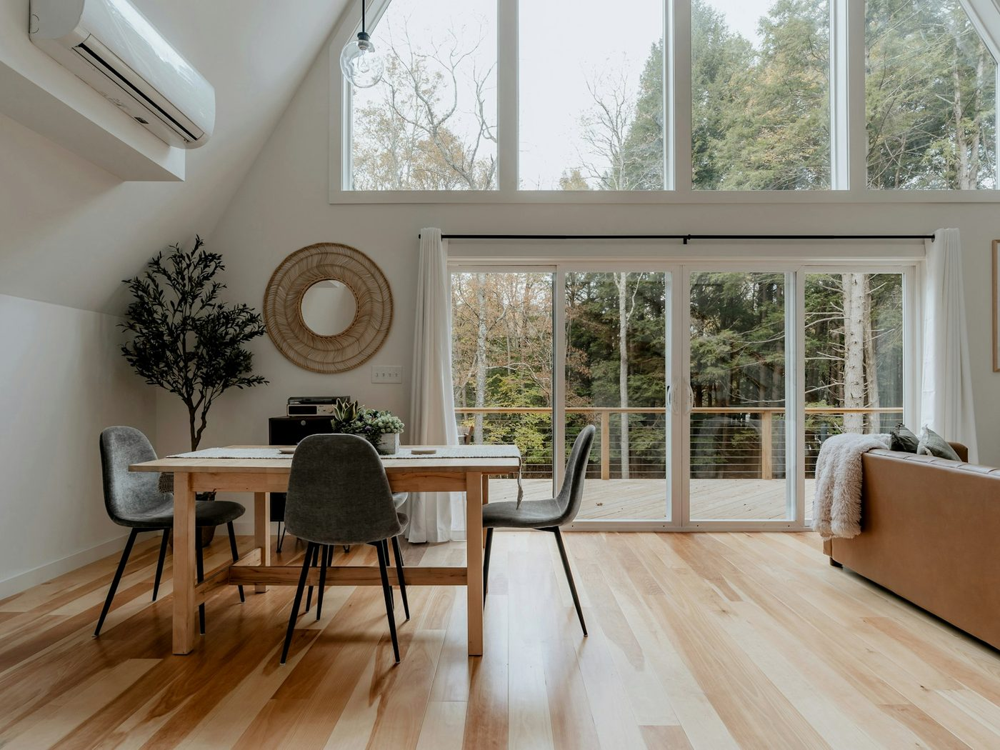
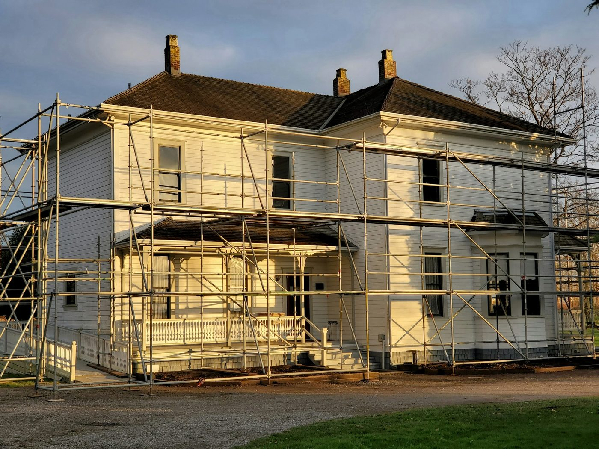
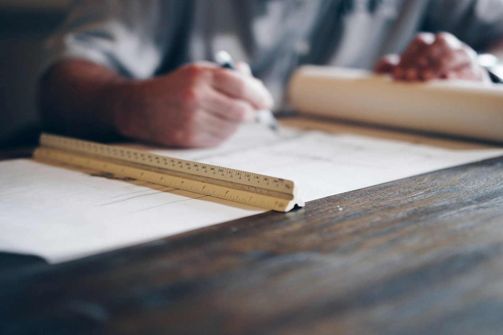
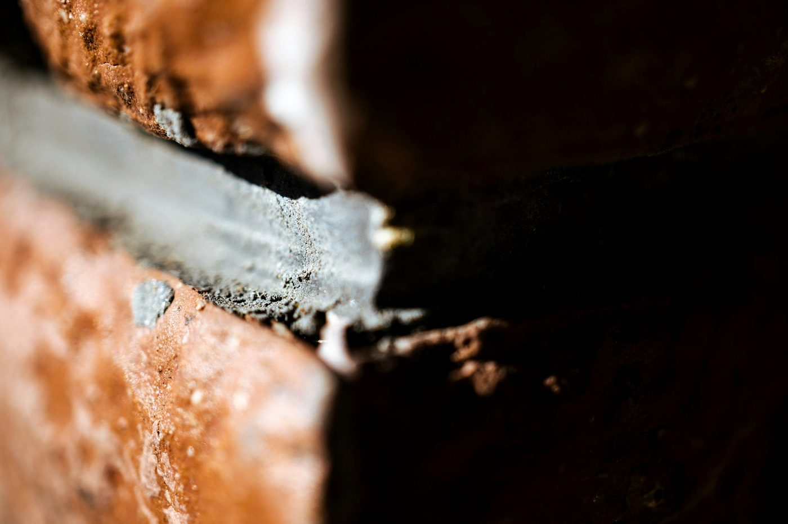
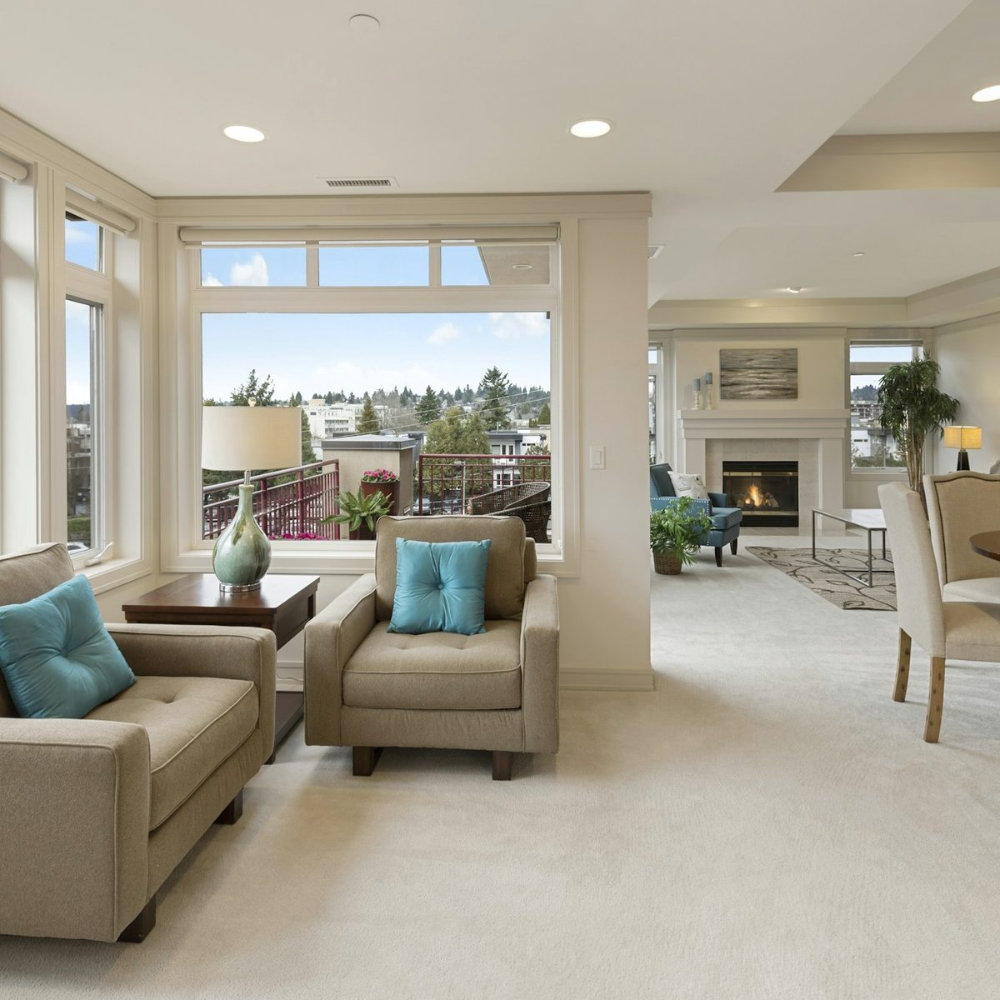

水まわり
浴室・洗面・トイレ・キッチン。ユニットバスの入れ替えは、解体から仕上げまで実働3〜5日です。 給湯器の交換を同時に行うと、1日短くなります。
| 費用の目安 | 65万 〜 180万円（ユニットバス入れ替えの場合） |
|---|---|
| 工期 | 浴室 3〜5日／トイレ 1日／キッチン 2〜4日 |
| 増えやすい所 | 土台の腐り、配管の交換（開けてから判断します） |

リフォームで揉めるのは、
だいたい追加費用の話です。
既存の建物を触る工事は、壁や床を開けてから分かることがあります。 下地の腐り、配管の劣化、断熱材の欠損。これらは事前の調査では見えません。
当社は、見積書に「開けてみて◯◯だった場合、追加で最大◯万円」と書き添えます。 金額が上振れする可能性のある項目を、契約前に一覧で示します。 実際に開けた時点で写真を撮り、その場でご連絡してから進めます。

浴室・洗面・トイレ・キッチン。ユニットバスの入れ替えは、解体から仕上げまで実働3〜5日です。 給湯器の交換を同時に行うと、1日短くなります。
| 費用の目安 | 65万 〜 180万円（ユニットバス入れ替えの場合） |
|---|---|
| 工期 | 浴室 3〜5日／トイレ 1日／キッチン 2〜4日 |
| 増えやすい所 | 土台の腐り、配管の交換（開けてから判断します） |

床の張り替え、壁紙、間仕切りの撤去。無垢のフローリングは、施工の2週間前に現場へ入れて 湿度に慣らしてから張ります。反りを防ぐためです。
| 費用の目安 | 8万 〜 60万円（6畳の床と壁紙で 25万円前後） |
|---|---|
| 工期 | 6畳の床 1〜2日／壁紙 1日／間仕切り撤去 2〜3日 |
| 増えやすい所 | 下地の不陸調整、根太の補強 |

外壁塗装、屋根、雨樋。目地のシーリングはオートンイクシードを使います。 一般的なシーリング材より材料費は上がりますが、次に打ち替えるまでの年数が変わります。
| 費用の目安 | 90万 〜 160万円（30坪・足場と塗装2回塗り） |
|---|---|
| 工期 | 14日前後（雨天順延あり） |
| 増えやすい所 | 下地の補修、破風や軒天の傷み |

調査には1時間ほどいただきます。床下と天井裏を見て、写真を20枚前後撮ります。 見積書は項目ごとに数量と単価を分けて書き、「一式」でまとめるのは仮設工事だけにしています。 他社との比較のために、同じ形式でお出しします。

「高耐久シーリング」ではなく「オートンイクシード」、「国産の床材」ではなく品番まで書きます。 同じ予算で別の材料を選ぶこともできるので、その場合は差額を並べてお見せします。 施主支給の材料も受けますが、その部分の保証は材料メーカーの保証のみになります。

当日〜3日
電話かフォームでご連絡ください。調査は1時間ほど、床下と天井裏も見ます。
調査から3日以内
項目ごとに数量と単価を分けた見積書と、増えうる項目の一覧をお渡しします。
ご検討
仕様の変更や減額の相談はこの段階で。何度でも作り直します。急かしません。
契約後 2〜4週間
材料の手配に2〜4週間いただきます。近隣へのご挨拶は着工の3日前に伺います。
工事中
見えなくなる部分は必ず撮影し、その日のうちにお送りします。
完了
一緒に確認してからお渡しします。自社施工部分は10年、設備はメーカー保証に準じます。

| 商号 | 野口工務店 |
|---|---|
| 建設業許可 | 埼玉県知事許可（般-00）第00000号ダミー |
| 資格 | 二級建築士 1名／一級建築施工管理技士 1名／大工 2名 |
| 住所 | 〒000-0000 埼玉県◯◯市△△ 0-0-0ダミー |
| 電話 | 000-0000-0000ダミー |
| 営業時間 | 8:00 – 18:00（日曜・祝日は事前予約のみ） |
| 支払い | 着工時 50%・完了時 50%（銀行振込） |
| 保証 | 自社施工部分 10年／設備機器はメーカー保証 |
MAP
Google マップの埋め込みコードを
この枠に差し込みます
構いません。無料です。他社と比べるための資料としてお使いください。 こちらから催促の連絡はしません。
水まわり以外は可能です。浴室は3〜5日使えなくなるので、 近隣の入浴施設をご案内するか、工程を分けて対応します。
網戸の張り替えや手すり1本から受けています。 3万円未満の工事は、出張費として2,000円を頂戴します。
お渡しします。特に壁の中や床下など、完成すると見えなくなる部分は 必ず撮影して、その日のうちにお送りします。
Contact